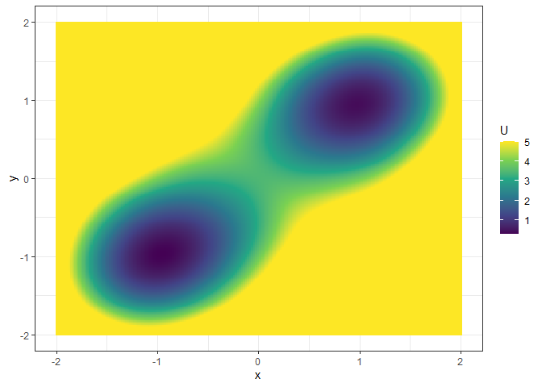

simlandr provides a set of tools for constructing potential landscape for dynamic systems using Monte-Carlo simulation, especially for psychological formal models. It can help to:
- Run batch simulations for different parameter values;
- Store large simulation outputs into hard drive by reusable
hash_big.matrixclass, and perform out-of-memory calculation; - Check convergence of the simulations;
- Construct 2d, 3d, 4d potential landscapes based on the simulation outputs;
- Calculate the lowest elevation path and barrier height for transitions between states.
Installation
You can install the development version from GitHub with:
install.packages("devtools")
devtools::install_github("Sciurus365/simlandr")
devtools::install_github("Sciurus365/simlandr", build_vignettes = TRUE) # Use this command if you want to build vignettesExample
library(simlandr)
# Simulation
## Single simulation
single_test <- sim_fun_test(
par1 = list(var1 = 1),
par2 = list(var2 = 1, var3 = 0)
)
## Batch simulation: simulate a set of models with different parameter values
batch_test2 <- new_var_set()
batch_test2 <- batch_test2 %>%
add_var("par1", "var1", -0.2, 0.2, 0.2) %>%
add_var("par2", "var2", -0.2, 0.2, 0.2)
batch_test_grid2 <- make_var_grid(batch_test2)
batch_test_result2 <- batch_simulation(batch_test_grid2, sim_fun_test,
default_list = list(
par1 = list(var1 = 0),
par2 = list(var2 = 0, var3 = 0)
),
bigmemory = FALSE
)
batch_test_result2
#> Output(s) from 9 simulations.
# Construct landscapes
## Example 1. 2d density landscape
l_single_2d <- make_2d_density(single_test, x = "out1", from = -2, to = 2, adjust = 1)
plot(l_single_2d)
## Example 2. 3d (x, y, color) plot matrix with two varying parameters
l_batch_3d_m2 <- make_3d_matrix(batch_test_result2, x = "out1", y = "out2", rows = "var1", cols = "var2", lims = c(-3, 3, -3, 3), h = 0.001, kde_fun = "ks", zmax = 10, individual_landscape = TRUE)
#> Making the 2d plot...
#> Done!
plot(l_batch_3d_m2)
# Calculate energy barriers
## Example 1
b_single_2d <- calculate_barrier_2d(l_single_2d, start_location_value = -2, end_location_value = 2, start_r = 0.3, end_r = 0.3)
b_single_2d$local_min_start
#> $U
#> [1] 1.722065
#>
#> $location
#> x_index x_value
#> 1 -2
b_single_2d$local_min_end
#> $U
#> [1] 1.723732
#>
#> $location
#> x_index x_value
#> 512 2
b_single_2d$saddle_point
#> $U
#> [1] 2.167971
#>
#> $location
#> x_index x_value
#> 267.00000000 0.08219178
get_barrier_height(b_single_2d)
#> delta_U_start delta_U_end
#> 0.4459061 0.4442392
plot(l_single_2d) + get_geom(b_single_2d)
## Example 2
b_batch_3d_m2 <- calculate_barrier_3d_batch(l_batch_3d_m2, start_location_value = c(-1, -1), end_location_value = c(1, 1), start_r = 0.3, end_r = 0.3)
#> The U in this range is too high. Searching range expanded...
#> r = c(0.691959798994974,0.691959798994974)
#> The U in this range is too high. Searching range expanded...
#> r = c(0.752261306532662,0.752261306532662)
#> The U in this range is too high. Searching range expanded...
#> r = c(0.691959798994974,0.691959798994974)
#> The U in this range is too high. Searching range expanded...
#> r = c(0.691959798994974,0.691959798994974)
#> The U in this range is too high. Searching range expanded...
#> r = c(0.601507537688441,0.601507537688441)
#> The U in this range is too high. Searching range expanded...
#> r = c(0.571356783919597,0.571356783919597)
#> The U in this range is too high. Searching range expanded...
#> r = c(0.752261306532662,0.752261306532662)
#> The U in this range is too high. Searching range expanded...
#> r = c(0.752261306532662,0.752261306532662)
#> The U in this range is too high. Searching range expanded...
#> r = c(0.903015075376882,0.903015075376882)
#> The U in this range is too high. Searching range expanded...
#> r = c(0.903015075376882,0.903015075376882)
#> The U in this range is too high. Searching range expanded...
#> r = c(0.752261306532662,0.752261306532662)
#> The U in this range is too high. Searching range expanded...
#> r = c(0.752261306532662,0.752261306532662)
#> The U in this range is too high. Searching range expanded...
#> r = c(0.691959798994974,0.691959798994974)
#> The U in this range is too high. Searching range expanded...
#> r = c(0.631658291457285,0.631658291457285)
#> The U in this range is too high. Searching range expanded...
#> r = c(0.691959798994974,0.691959798994974)
#> The U in this range is too high. Searching range expanded...
#> r = c(0.691959798994974,0.691959798994974)
#> The U in this range is too high. Searching range expanded...
#> r = c(0.631658291457285,0.631658291457285)
#> The U in this range is too high. Searching range expanded...
#> r = c(0.691959798994974,0.691959798994974)
plot(l_batch_3d_m2) + get_geom(b_batch_3d_m2)Vignettes
See the vignettes of this package (browseVignettes("simlandr")) for more examples and explanations.